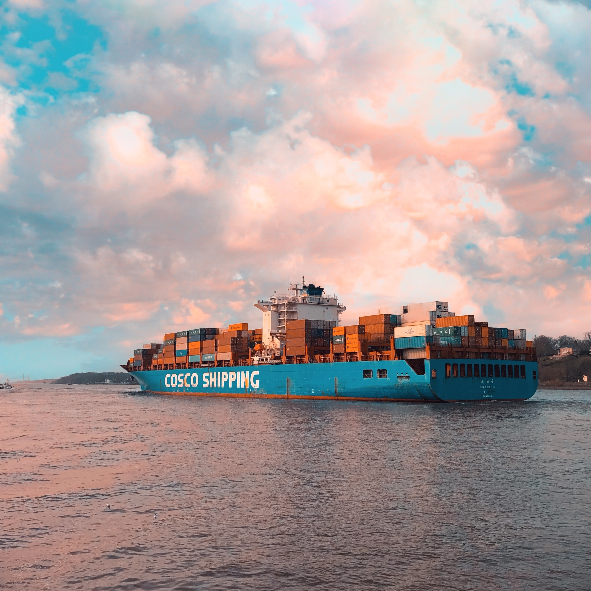

비전과전략

fair trade voluntarily vision,strategy
1981년 4월 ‘독점규제 및 공정거래에 관한 법률’의 시행과 더불어 공정거래제도가 정식 출범하였으나 정부의 법 집행에만 의존하는 시장질서의 확립은 행정자원의 낭비와 기업의 적응 비용 부담만 초래하였을 뿐, 기업의 위반사례는 해마다 늘어나는 추세이고, 자율준수 프로그램은 기업의 공정한 경쟁을 위한 관련법규의 자율적 준수를 위하여 기업 스스로 자체적인 체제를 확립하고 조직을 구축/운영하는 것을 의미하며, 이는 공정거래관련 법규의 위반을 방지하기 위한 사전예방활동 강화 및 사후조치를 그 목적으로 한다.
-
- CP시스템 구축
- 이행이나 조직 내의 혁신을 방해하는 고의적 전략일 일컫는 사업 용어이다. 사용자 저항을 극복하는 전략은 사용자 참여, 사용자 교육 및 훈련, 경영 명령이나 정책, 협력하는 사용자를 위한 인센티브 제공을 포함한다.
-
- 위반행위 및 시정
- 위법행위로서 법률요건의 하나이다. 영국의 도너휴 대 스티븐슨 판결이 불법행위법의 시작으로 알려져 있다. 인류의 최초 권익구제의 방법은 자력구제(복수)밖에 없었다.기업 공정성을 준수하는 포스코는 사업을통해 이루어진다.
-
- 시스템 평가 및 고도화
- 국내 내화물 수요는 포스코를 중심으로 한 철강업계가 시장의 약 70%의 비중을 차지하고 있으며, 동사는 대부분의 매출이 최대 수요처인 포스코를 통해 안정적으로 이루어지고 있다. 포스코케미칼은 내화물 생산의 주요 원료로 고도화 된다.
운영조직
포스코케미칼의 공정거래 조직 이사회
-
- 자율순준 담당자[자율준수협의회]
- 프로그램 설계 후 편람작성 및 감시
-
- 자율준수 관리자[법무실장]
- 프로그램 운영 및 내부감독 실시
-
- 전담조직[법무실]
- CP 중요사항 심의 및 관리자 자문
핵심요소
핵심7요소
-
- 자율 준수 의지 표명
- 관리자의 의지를 대내외에 메세지 공표
-
- 관리자의 지정 운용
- 실질적인 책임을 자율관리자의 지정
-
- 자율편람의 작성/배포
- 사내망을 활용해 전자게시 및 배포
-
- 교육 프로그램 운영
- 법규위반 가능성이 높은 부서에 특별교육
-
- 내부감독체계 구축
- 최고경영자와 이사회에 주기적 보고 실시
-
- 인사팀 구축 및 포상
- 자율준수 우수 부터 개인에 대한 포상 수여
-
- 문서관리체계의 구축
- 문서관리 책임자를 지정해 문서관리 실시